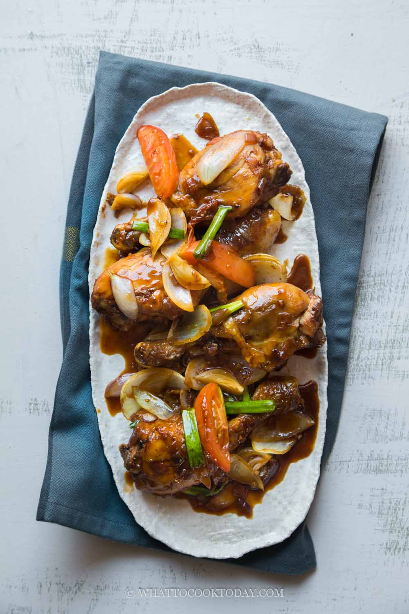

Soy Sauce Chicken

Description
Ayam masak kicap is one of my favorite Malay-style chicken dish cooked in sweet and spicy soy-sauce based gravy. They are full of flavor without a long list of spices and herbs used in the recipe. Traditionally, the chicken is deep-fried and then cooked in the sweet soy sauce gravy. I air fried the chicken instead. Ayam masak kicap is perfect for any day of the week.
Ingredients
- 1/2 ekor ayam
- garam
- kunyit
- 1 mangkuk minyak
- 2 sudu besar cili kisar
- 3 sudu besar sos romato
- 2 sudu besar sos tiram
- kicap manis
- cili merah
- sedikit air
- 2 sudu besar air asam jawa
- bawang besar, hiris bulat
- Bahan tumbuk halus:
- 3 ulas bawang putih
- 4 biji bawang merah
- 2 inci halia
Steps
- Gaul ayam bersama garam dan kunyit.
- Panaskan minyak dan goreng ayam separuh masak. Angkat dan ketepikan.
- Kurangkan sedikit minyak gorengan ayam tadi cukup sekadar untuk tumisan. Masukkan bahan tumbuk halus dan kacau sehingga kekuningan.
- Masukkan cili kisar, sos tiram, sos tomato, dan ayam tadi. Kacau seketikan.
- Masukkan pula kicap, agak-agak sahaja supaya cukup kuahnya, kemudian masukkan cili merah dan sedikit air.
- Tutup dan biarkan ayam masak, masukkan tomato dan bawang besar. Kacau sekejap sahaja anggaran bawang sedikit layu dan padamkan api.
- Angakat dan hidang bersama taburan cili dan daun bawang.